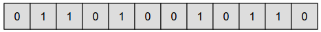
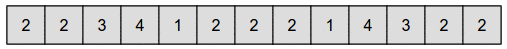
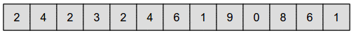

أوجد الرقم الذي يعبر عن الصورة "الهدف".
اضغط على الأرقام لتلوين صورتك
تنبيه: يمكنك حل المسألة بدون إستخدام الصفر
تنبيه: لون المربع يتأثر بلون المربع أعلاه
On place un 0 pour représenter une case blanche, et un 1 pour représenter une case grisée.

Pour décrire la figure, on indique le nombre de cases blanches à remplir depuis le début, puis le nombre de cases grisées à remplir ensuite, puis le nombre de cases blanches à remplir ensuite, etc... en avançant ainsi jusqu'à la fin. Par exemple, la séquence "4 3 2" permet d'afficher 4 cases blanches, suivies de 3 cases grisées, suivies de 2 cases blanches.
La suite de chiffres décrivant l'image souhaitée est ainsi :

Observez qu'on continue sur la ligne suivante quand le nombre de cases à dessiner dépasse le nombre de cases restantes sur la ligne courante. C'est ce qui se passe par exemple au début, avec "2 2 3" : la troisième case blanche associée se trouve alors placée sur la deuxième ligne.
Pour décrire la figure, on indique le nombre de cases qui sont d'une couleur différente de celles de la ligne du dessus, puis le nombre de cases qui sont de la même couleur que celles de la ligne du dessus, puis le nombre de cases qui sont d'une couleur différente de celles de la ligne du dessus, etc.
La suite de chiffres décrivant l'image souhaitée est ainsi :

Remarque : à un moment, on a 17 cases de suite où à chaque fois la case est de la même couleur que celle de la case située au-dessus d'elle. Comme on ne dispose pas du nombre 17, on est obligé d'utiliser deux chiffres dont la somme vaut 17, en les séparant par un 0, ce que l'on peut obtenir soit en écrivant "9 0 8", soit en écrivant "8 0 9".
Astuce : pour cette version, il est en fait possible de résoudre le sujet sans rien comprendre à ce que représentent les chiffres. La stratégie est la suivante : essayer, de manière répétée, de placer le plus grand chiffre possible qui permet de ne pas faire d'erreur de coloriage. Ainsi, on commence par 9, on voit que ça dessine des cases de la mauvaise couleur, donc on le retire et on essaie le 8 à la place, puis le 7, puis le 6, etc... jusqu'au 3. Comme le chiffre 3 ne dessine que des cases de la bonne couleur, on le laisse. On passe alors au chiffre suivant, en repartant du 9, et ainsi de suite, jusqu'à ce que toutes les cases aient la bonne couleur. Certes, c'est un peu fastidieux, mais ça fonctionne à tous les coups !
La version facile de ce sujet illustre un encodage de base d'une image en noir et blanc en informatique, avec un 0 pour chaque case blanche, et un 1 pour chaque noire.
La version moyenne de ce sujet illustre une technique de compression d'image. La compression permet de décrire une image en utilisant une plus petite quantité d'information. Ici, la méthode pour comprimer les données exploite la propriété que l'image n'est pas aléatoire : on a souvent des longues successions de 0, ou bien des longues successions de 1.
Ainsi, par exemple plutôt que d'écrire "00000000000011111111" on peut écrire juste "12,8", pour dire qu'on met 12 fois 0 à la suite, puis 8 fois 1. Cette méthode de compression, appelée encodage RLE, était utilisée dans les fax, moyen privilégié pour envoyer des images avant l'avènement d'internet.
La version difficile de ce sujet illustre une technique avancée de compression d'image, et suggère que la manière dont on décrit une case peut dépendre de la couleur de la case voisine (ici, la case du dessus). Ce type de méthode est utilisé notamment dans les méthodes modernes de compression d'image, comme par exemple dans le format PNG, très répandu sur internet.